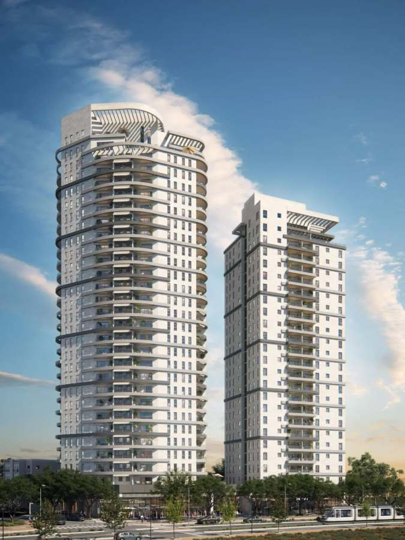
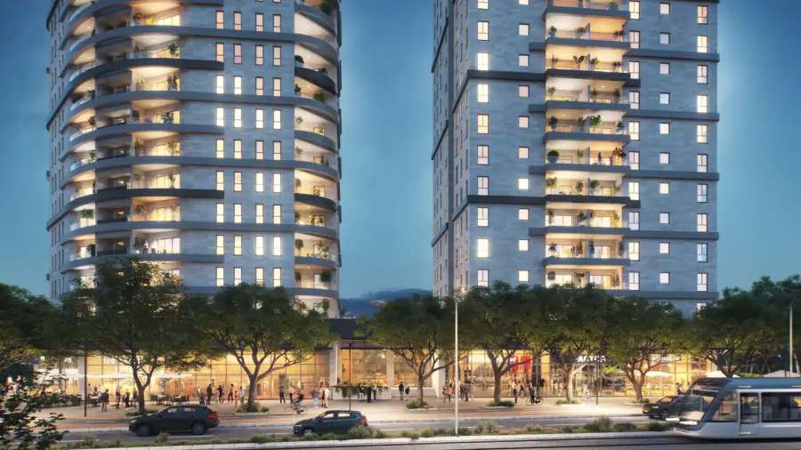
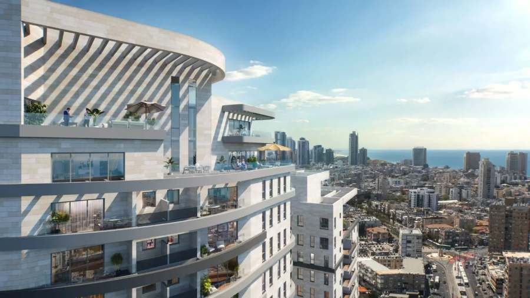
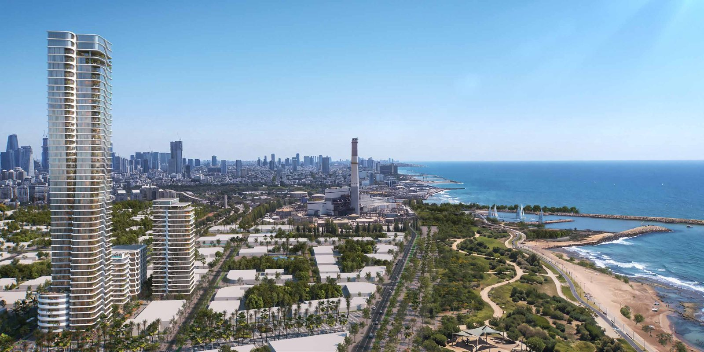
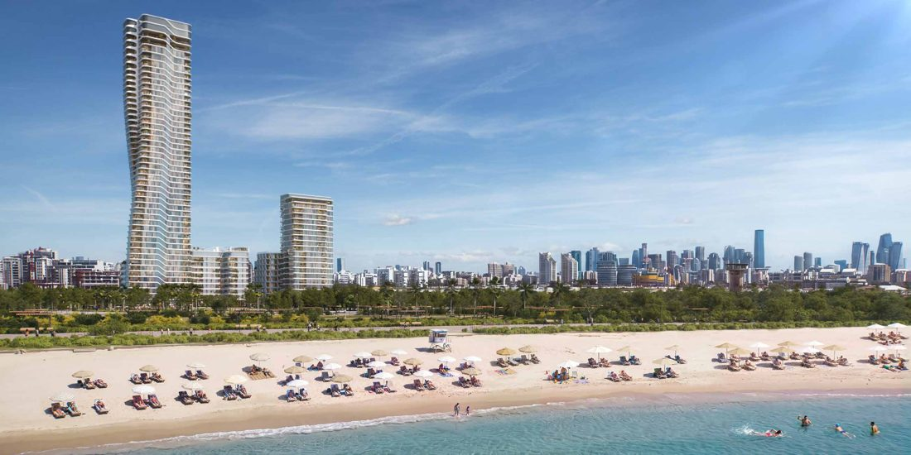
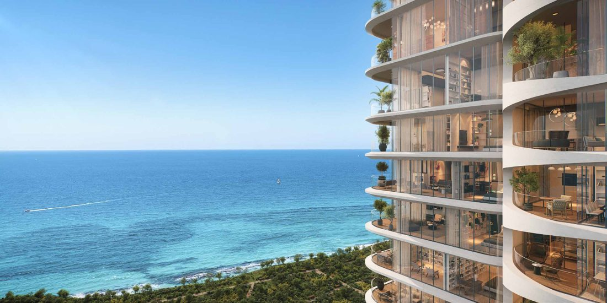
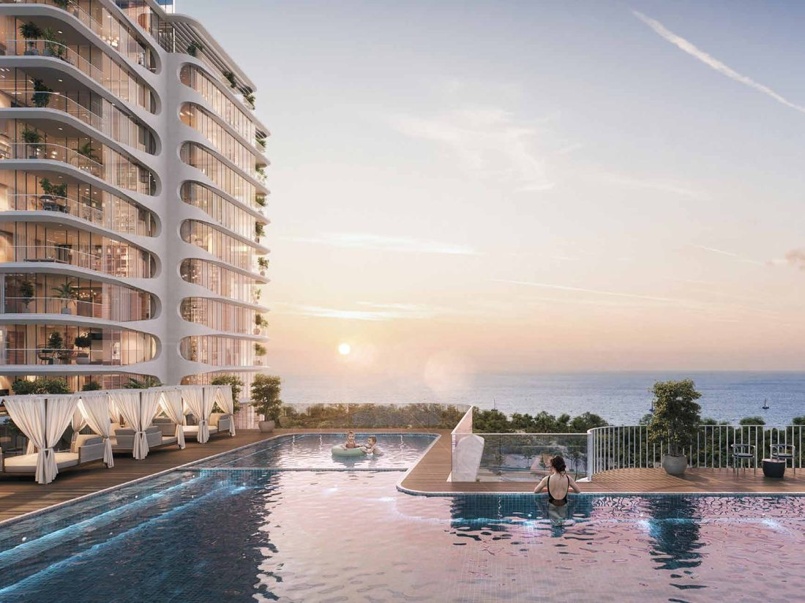

Tel Aviv developments
New-build and off-plan homes in Tel Aviv and on its doorstep — Israel's commercial and cultural center.




Sderot HaAtzmaut 76, Bat Yam
Prices starting from NIS 2,700,000
Why this opportunity stands out
- Light rail station at the foot of the building – direct, effortless access into Tel Aviv and beyond.
- Sea views just 900 metres from the shoreline – lifestyle and rental appeal combined.
- Tel Aviv overflow effect – just 2 city blocks from the Tel Aviv municipal boundary. As prices in Tel Aviv continue to climb, demand is being pushed outward, driving strong capital appreciation in surrounding areas.
- Active gentrification in the immediate neighbourhood – urban renewal, infrastructure upgrades and rising desirability creating additional upside potential.
Exceptional value, rare entry point
Finding a sea-view property, steps from light rail, bordering Tel Aviv — at this price point — is becoming nearly impossible. This is not just an entry-level purchase. It’s a strategic position ahead of continued growth.
Enquire about this development



Sde Dov West, Tel Aviv
Prices starting from NIS 2,600,000
A AAA location in Tel Aviv’s new coastal district — just steps from the sea, surrounded by large protected green spaces. Sde Dov West is being built from the ground up as a new coastal node of Tel Aviv, with every feature of contemporary town planning and lifestyle: promenades, parks, light rail, schools, shops and workplaces, all within a short walk. Architecture shaped by its setting, with a considered relationship between the city, the sea and the sky.
Why this location stands out
- Steps from the sea – the beach is just 280 m away, with a 20 m walk to Einstein Square and its promenade to the sea
- Large protected green spaces – a 240,000 sqm coastal park 160 m away, plus 35,000 sqm of public gardens
- Coastal promenade for walking, cycling and seaside shops
- Connected to the city – Einstein Station on the planned light rail Green Line is 175 m away, with the new Ibn Gabirol boulevard and the future marina close by
- Complete neighbourhood – 95,000 sqm of education and community facilities, retail, workplaces and leisure, and a lively urban square
The development
- 437 residences in 45- and 20-storey towers and a 9-storey residential building
- Shared spaces by internationally acclaimed architect Kobi Karp; architecture and residential planning by MYS Architects
- Rooftop pool with sea views, gym, spa and saunas, yoga studio, landscaped gardens and a children’s club
- Open sea and city views from the residences